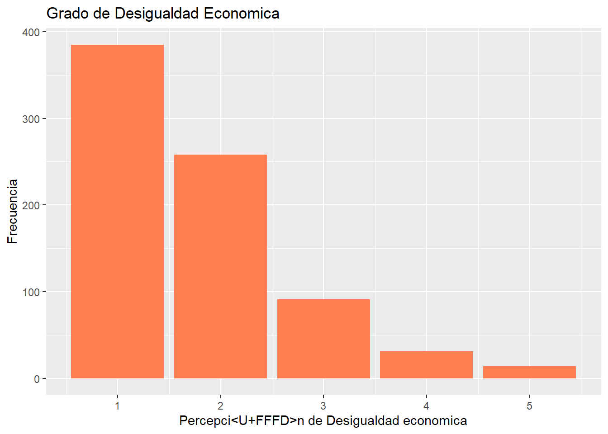
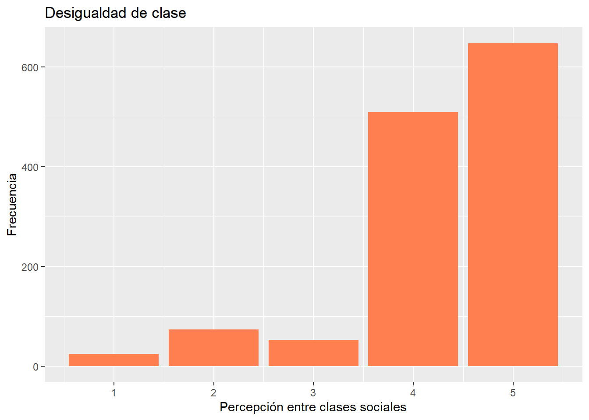
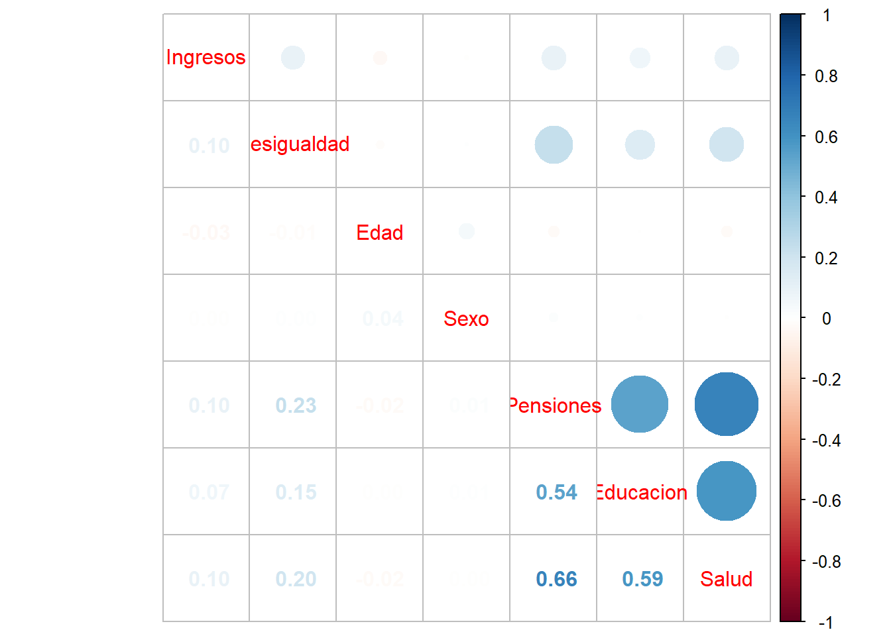
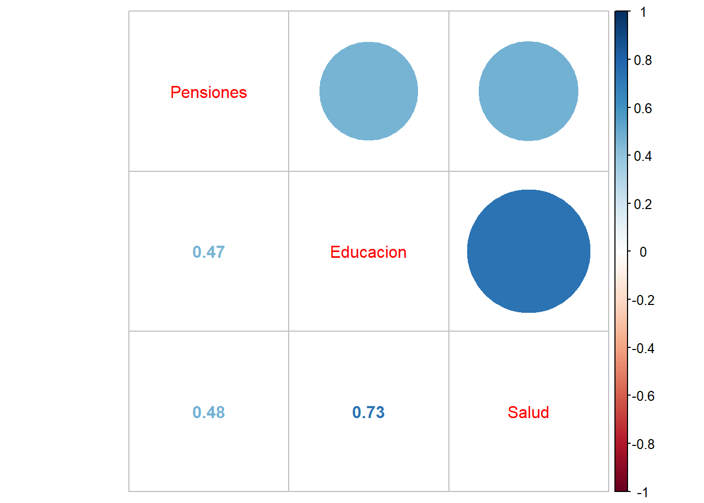
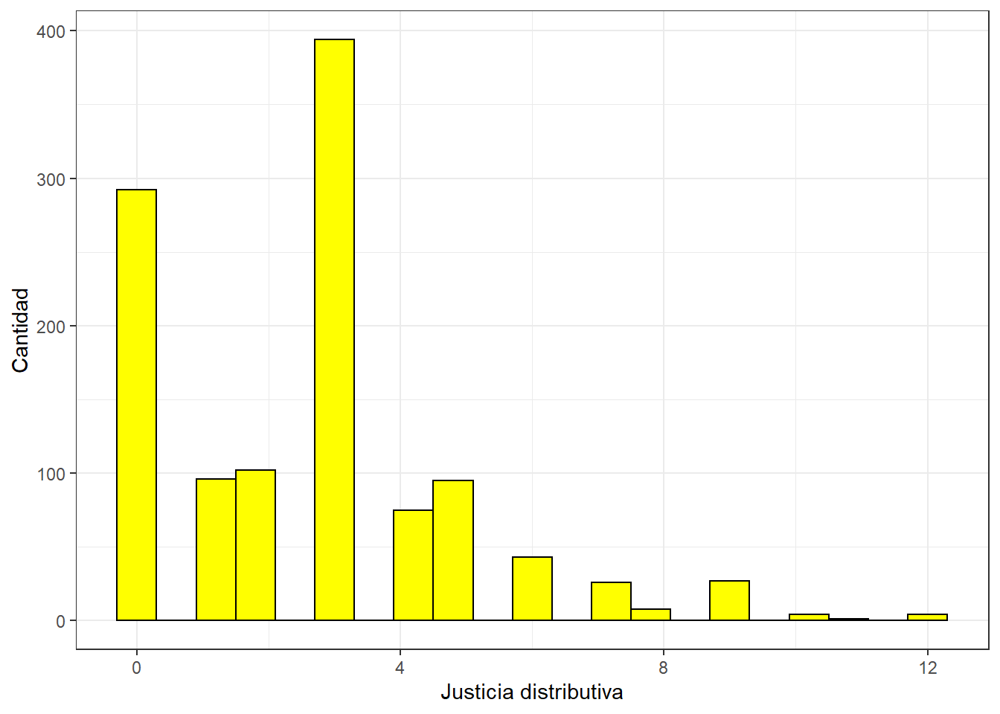

pacman::p_load(sjlabelled,
dplyr, #Manipulacion de datos
stargazer, #Tablas
sjmisc,# Tablas
kableExtra, #Tablas
sjPlot, #Tablas y gr�ficos
corrplot, # Correlaciones
sessioninfo, # Informaci�n de la sesi�n de trabajo
ggplot2) # Para la mayor�a de los gr�ficosPractico 3
Pr�ctico 3
Percepci�n de Desigualdad para el a�o 2016
Chile es reconocido de manera internacional como un pa��s estable economicamente, con grandes recursos naturales y un clima diverso. La econom��a en Chile est� condicionada por el modelo neoliberal establecido en los a�os 80 por medio de la Dictadura militar, esto quiere decir que existe la libre competencia, generando� una gran diversificaci�n de servicios. Tal es el impacto que genera el pa��s a nivel latinoamericano que Chile obtiene uno de los niveles m�s altos en Latinoamerica y el Caribe de producto interno bruto por habitantes, generando as� un camino hacia una econom��a m�s desarrollada y rica (solimano2018?). Asimismo, Chile se ha mantenido en un alza permanente en los �ltimos 35 a�os a traves de la creaci�n de acuerdos internacionales y pol��ticas nacionales. De esta manera lo evidencia el Banco mundial estableciendo a Chile como unas de las econom��as latinas de mas r�pido crecimiento reduciendo los niveles de pobreza de un 26% a un 7,9% (mieresbrevis2020?).
Pese a este constante crecimiento se logra evidenciar grandes concentraciones de ingresos que abarcan los sectores con mayor poder adquisitivo del pa�s, en que seg�n los Sociologos Atria & Otero donde ambos ��ndican que se aprecia que tan solo el top 1% chileno m�s rico accede al 30% del total de la recaudaci�n nacional, mientras que el 50% m�s pobre solamente presenta el 10% total nacional (impuesto2021?). Tal acci�n permite un mayor desarrollo econ�mico hacia estos sectores privilegiados, guiados principalmente por grandes grupos empresariales los cuales continuan aumentando sus recursos, condicionando este desarrollo del pa��s a un imperceptible progreso que recae en cierto porcentaje de la elite. En consecuencia, se produce una desigualdad econ�mica evidente en base a la redistribuci�n de impuestos ya que no se cobran impuestos m�s altos a quienes poseen mayores ingresos y tienen mayor capacidad de pago.
A su vez, la desigualdad posee caracter��sticas negativas que afrontan una serie de consecuencias en las sociedades en las que esta se desarrolla con mayor preponderancia y evidencia. Como relevancia sociol�gica se tomar�n en cuenta tres efectos de las diferencias econ�micas tratados por Atr��a & Otero en Impuestos justos para el Chile que Viene (2021). El primero es que la cohesi�n entre grupos heterogeneos, de extremos diferentes, resulta cada vez m�s compleja. Lo segundo es que se pierde la identidad de la meritocracia ya que las ventajas sociales son productos heredados generacionalmente, deshaciendo el derecho a la igualdad de oportunidades. Por �ltimo, incrementa las diferencias econ�micas entre los altos y bajos ingresos, para as�� seguir fortaleciendo a los grupos dominantes. Tales efectos act�an de manera interseccional confiriendo un fen�meno amplio de conflicto social (impuesto2021?).
Si bien los datos permiten evidenciar la problem�tica de la desigualdad, es totalmente contrario la sensacipon que los ciudadanos chilenos perciben de la desigualdad econ�mica en el pa��s. En base a los datos presentados en el Estudio longitudinal social de Chile del a�o 2016 (Ola I) se constata una visi�n negativa respecto a los �ndices de desigualdad econ�mica, siendo 2.568 encuestados de un total de 2.913 casos los que consideran que en Chile las diferencias de ingresos son demasiado grandes. Es por esto que, consideraremos como propuesta central a investigar el grado de percepci�n de desigualdad que poseen los chilenos y chilenas seg�n su condici�n socioeconomica, con tal de poder identificar las sensaciones y pensamientos que tienen las clases sociales.
Sobre la base, contemplaremos en la presente investigaci�n como Desigualdad Econ�mica la aproximaci�n que se concentra en la percepci�n sobre la distribuci�n econ�mica sin un componente evaluativo, con tal de definir la sensaci�n del nivel de desigualdad econ�mica que existe en la sociedad chilena (castillo2012?).
A la vez, te�ricamente se expresan dos hip�tesis que adjudican dos factores disimiles que afectan la percepci�n de desigualdad. En un primer t�rmino (Evans et al., 1992; Schattschneider, 1960 como se cita en Segovia & Gamboa, 2015) puede variar respecto al nivel econ�mico que los involucrados posean al momento de la encuesta. En este sentido, las personas que resulta que obtienen una mayor percepci�n de desigualdad tienden a estar dentro de los grupos con menores ingresos, ya que se mantienen directamente impactados por los efectos de la desigualdad, dado esto exhibiran una mayor preocupaci�n hacia la problem�tica y tender�n a evaluar con mayor rigor y negatividad los niveles alcanzados. Mientras que, como segundo t�rmino la estimaci�n de ingresos, es decir, la percepci�n de desigualdad es mayor en grupos con ingresos y niveles educacionales m�s altos, ya que al tener esta caracter��stica tender�n a acertar con mayor facilidad y tener mayor conocimiento sobre el problema. Castillo et al., 2012; Bartels, 2008; McCall, 2005; 2013; Page & Jacobs, 2009 como se cita en (segovia2016?).
De acuerdo con lo anterior y en base a la informaci�n recabada, para la presenta investigaci�n se considerar�como hip�tesis el primer t�rmino, por lo que a medida en que menores ingresos poseen los encuestados mayor percepci�n de desigualdad evidencian.
Base de datos
library("tidyverse")-- Attaching packages --------------------------------------- tidyverse 1.3.2 --v tibble 3.2.1 v purrr 0.3.4
v tidyr 1.2.1 v stringr 1.5.1
v readr 2.1.3 v forcats 0.5.1-- Conflicts ------------------------------------------ tidyverse_conflicts() --
x tibble::add_case() masks sjmisc::add_case()
x forcats::as_factor() masks sjlabelled::as_factor()
x ggplot2::as_label() masks dplyr::as_label(), sjlabelled::as_label()
x dplyr::filter() masks stats::filter()
x kableExtra::group_rows() masks dplyr::group_rows()
x purrr::is_empty() masks sjmisc::is_empty()
x dplyr::lag() masks stats::lag()
x tidyr::replace_na() masks sjmisc::replace_na()library("table1")
Attaching package: 'table1'
The following objects are masked from 'package:base':
units, units<-library("psych")
Attaching package: 'psych'
The following objects are masked from 'package:ggplot2':
%+%, alphalibrary("haven")
Attaching package: 'haven'
The following objects are masked from 'package:sjlabelled':
as_factor, read_sas, read_spss, read_stata, write_sas, zap_labelslibrary("magrittr")
Attaching package: 'magrittr'
The following object is masked from 'package:purrr':
set_names
The following object is masked from 'package:tidyr':
extractlibrary("sjmisc")
library("lm.beta")
library("dplyr")
library("Hmisc")
Attaching package: 'Hmisc'
The following object is masked from 'package:psych':
describe
The following objects are masked from 'package:table1':
label, label<-, units
The following object is masked from 'package:sjmisc':
%nin%
The following objects are masked from 'package:dplyr':
src, summarize
The following objects are masked from 'package:base':
format.pval, unitslibrary("PerformanceAnalytics")Loading required package: xts
Loading required package: zoo
Attaching package: 'zoo'
The following objects are masked from 'package:base':
as.Date, as.Date.numeric
Attaching package: 'xts'
The following objects are masked from 'package:dplyr':
first, last
Attaching package: 'PerformanceAnalytics'
The following object is masked from 'package:graphics':
legendlibrary("sjPlot")
library("texreg")Version: 1.38.6
Date: 2022-04-06
Author: Philip Leifeld (University of Essex)
Consider submitting praise using the praise or praise_interactive functions.
Please cite the JSS article in your publications -- see citation("texreg").
Attaching package: 'texreg'
The following object is masked from 'package:magrittr':
extract
The following object is masked from 'package:tidyr':
extractlibrary("car")Loading required package: carData
Attaching package: 'car'
The following object is masked from 'package:psych':
logit
The following object is masked from 'package:purrr':
some
The following object is masked from 'package:dplyr':
recodelibrary("pacman")
library("Rcpp")
library("corrplot")setwd("C:/Users/matia/Documents/Trabajo 2")Base <- read_sav("ELSOC_Long_2016_2022_v1.00.sav")Variables
Para la realizaci�n de la investigaci�n se tomaron en cuenta 7 variables de la Base del SOC del COES del a�o 2016 las cuales nos guiar�n en el proceso evaluativo de la percepci�n de desigualdad que se sent�a en esos a�os en la poblaci�n Chilena. Entre estas encontramos:
1) C18_11: En chile, las diferencias de ingresos son demasiado grandes.
2) d19: �Y cuan justa o injusta cree ud que es la diferencia en la situaci�n de vida entre las personas de clase social alta y las de clase social baja en Chile?.
3) m0_sexo: sexo de los encuestados.
4) m0_edad: edad de los encuestados, aqu� tomaremos los m�s jovenes, entre 18 a 25 a�os.
5) d02_01: Es justo que las personas de altos ingresos tengan mejores pensiones que las personas de ingresos m�s bajos.
6) d02_02 : Es justo que las personas de altos ingresos tengan mejor educaci�n para sus hijos que las personas de ingresos m�s bajos.
7) d02_03: Es justo que las personas de altos ingresos puedan acceder a una mejor atenci�n de salud que las personas de ingresos m�s bajos.
Base_elsoc <- Base %>% select(Ingresos=d19, #Grandes diferencias de ingresos
Desigualdad=c18_11, #Diferencia justa o injusta
Edad=m0_edad, #Edad
Sexo=m0_sexo, #Sexo
Pensiones=d02_01, #Percepci�n propia
Educacion=d02_02, #Percepci�n de la familia
Salud=d02_03) #Percepci�n de los hijosEstas fueron modificadas para una mejor implementaci�n, quitando la datificaci�n perdida, en conjunto con los datos que arrojan distintos errores en el momento que se realiz� la encuesta. Asimismo, se le reasignaron nombres m�s sustantivos a las variables para que estas sean a�n m�s identificables.
c18_11 = Desigualdad
d19 = Ingresos
m0_sexo = Sexo
m0_edad = Edad
d02_01 = Pensiones
d02_02 = Educacion
d02_03 = Salud
Base_elsoc_filt <- subset(Base_elsoc, Edad >= 18 & Edad <= 25)Datos descriptivos de las variables
frq(Base_elsoc_filt$Ingresos)Justificacion de diferencias entre clases sociales (x) <numeric>
# total N=1310 valid N=782 mean=-1.66 sd=55.05
Value | Label | N | Raw % | Valid % | Cum. %
------------------------------------------------------------------------------
-999 | No Responde | 0 | 0.00 | 0.00 | 0.00
-888 | No Sabe | 3 | 0.23 | 0.38 | 0.38
-777 | Valor perdido por error tecnico | 0 | 0.00 | 0.00 | 0.38
-666 | Valor perdido por encuesta incompleta | 0 | 0.00 | 0.00 | 0.38
1 | Muy injusta | 385 | 29.39 | 49.23 | 49.62
2 | injusta | 258 | 19.69 | 32.99 | 82.61
3 | Ni injusta ni justa | 91 | 6.95 | 11.64 | 94.25
4 | Justa | 31 | 2.37 | 3.96 | 98.21
5 | Muy justa | 14 | 1.07 | 1.79 | 100.00
<NA> | <NA> | 528 | 40.31 | <NA> | <NA>En la primera variable logramos observar como los datso perdidos por No sabe o no responde se llevan un porcentaje de los encuestados, por lo que deben ser eliminados para una mayor precisi�n a la hora de la interpretaci�n.
A la misma vez, logramos observar que existe una tendencia positiva a evaluar muy injusta e injusta la situaci�n de vida entre clases baja y alta.
frq(Base_elsoc_filt$Desigualdad)Grado de acuerdo: Las diferencias de ingreso son demasiado grandes (x) <numeric>
# total N=1310 valid N=1310 mean=2.16 sd=44.52
Value | Label | N | Raw % | Valid % | Cum. %
------------------------------------------------------------------------------
-999 | No Responde | 1 | 0.08 | 0.08 | 0.08
-888 | No Sabe | 2 | 0.15 | 0.15 | 0.23
-777 | Valor perdido por error tecnico | 0 | 0.00 | 0.00 | 0.23
-666 | Valor perdido por encuesta incompleta | 0 | 0.00 | 0.00 | 0.23
1 | Totalmente en desacuerdo | 24 | 1.83 | 1.83 | 2.06
2 | En desacuerdo | 73 | 5.57 | 5.57 | 7.63
3 | Ni en desacuerdo ni de acuerdo | 52 | 3.97 | 3.97 | 11.60
4 | De acuerdo | 510 | 38.93 | 38.93 | 50.53
5 | Totalmente de acuerdo | 648 | 49.47 | 49.47 | 100.00
<NA> | <NA> | 0 | 0.00 | <NA> | <NA>En segunda instancia, observamos los descriptivos de la variable Desigualdad, en donde se aprecia que existe una alta presencia de acuerdo entre los encuestados para indicar que en Chile se presentan altos ��ndices de diferencias de ingresos.
frq(Base_elsoc_filt$Sexo)Sexo del entrevistado (x) <numeric>
# total N=1310 valid N=1310 mean=1.56 sd=0.50
Value | Label | N | Raw % | Valid % | Cum. %
-----------------------------------------------
1 | Hombre | 570 | 43.51 | 43.51 | 43.51
2 | Mujer | 740 | 56.49 | 56.49 | 100.00
<NA> | <NA> | 0 | 0.00 | <NA> | <NA>Finalmente, en la variable sexo logramos captar que hay una fuerte presencia del g�nero femenino en la encuesta, por lo que probablmente los resultados indiquen mayor preponderancia hacia este g�nero.
Casos perdidos eliminados
Base_elsoc_filt <- Base_elsoc_filt %>% set_na(., na = c(-999, -888, -777, -666))Recodificaci�n de variables
Variable sexo
Para la variable sexo se utiliz� el proceso de recodificaci�n, con la finalidad de convertirla en una variable Dummy. Es decir, en dos categorias, donde el 1 = representa a las mujeres y el 0 = representa a los hombres.
Base_elsoc_filt$Sexo <- car::recode(Base_elsoc_filt$Sexo, "1=0;2=1")
Base_elsoc_filt$Sexo <- factor(Base_elsoc_filt$Sexo,
labels=c( "Hombre",
"Mujer"),
levels=c(0,1))Nombres sustantivos para las variables
#Nombres sustantivos
Base_elsoc_filt$Ingresos <- set_label(x = Base_elsoc_filt$Ingresos,label = "Desigualdad de Ingresos")
get_label(Base_elsoc_filt$Ingresos)[1] "Desigualdad de Ingresos"Base_elsoc_filt$Desigualdad <- set_label(x = Base_elsoc_filt$Desigualdad,label = "Percepci�n de Desigualdad")
get_label(Base_elsoc_filt$Desigualdad)[1] "Percepci<U+FFFD>n de Desigualdad"Base_elsoc_filt$Edad <- set_label(x = Base_elsoc_filt$Edad,label = "Edad Encuestados")
get_label(Base_elsoc_filt$Edad)[1] "Edad Encuestados"Base_elsoc_filt$Sexo <- set_label(x = Base_elsoc_filt$Sexo,label = "Sexo Encuestados")
get_label(Base_elsoc_filt$Sexo)[1] "Sexo Encuestados"Base_elsoc_filt$Pensiones <- set_label(x = Base_elsoc_filt$Pensiones,label = "Justicia distributiva Pensiones")
get_label(Base_elsoc_filt$Pensiones)[1] "Justicia distributiva Pensiones"Base_elsoc_filt$Educacion <- set_label(x = Base_elsoc_filt$Educacion,label = "Justicia distributiva Educacion")
get_label(Base_elsoc_filt$Educacion)[1] "Justicia distributiva Educacion"Base_elsoc_filt$Salud <- set_label(x = Base_elsoc_filt$Salud,label = "Justicia distributiva Salud")
get_label(Base_elsoc_filt$Salud)[1] "Justicia distributiva Salud"Re etiquetado de variables
Base_elsoc_filt$Ingresos <- set_labels(Base_elsoc_filt$Ingresos,
labels=c( "Muy injusta"=1,
"Injusta"=2,
"Ni injusta ni justa"=3,
"Justa"=4,
"Muy justa"=5))
Base_elsoc_filt$Desigualdad <- set_labels(Base_elsoc_filt$Desigualdad,
labels=c( "Totalmente de desacuerdo"=1,
"Desacuerdo"=2,
"Ni en desacuerdo ni de acuerdo"=3,
"De acuerdo"=4,
"Totalmente de acuerdo"=5))Variable Edad
La variable edad no sufri� grandes modificaciones. Sin embargo, se le a�adi� como label=edad, para cuando esta se graficara tuviera la etiqueta correspondiente a su nombre y fuera m�s factible de identificar.
Tablas
Base_elsoc_filt <-as.data.frame(Base_elsoc_filt)
stargazer(Base_elsoc_filt, type="text")
=========================================
Statistic N Mean St. Dev. Min Max
-----------------------------------------
Ingresos 779 1.756 0.935 1 5
Desigualdad 1,307 4.289 0.917 1 5
Edad 1,310 22.662 1.966 18 25
Pensiones 1,167 2.162 1.045 1 5
Educacion 1,168 1.791 0.856 1 5
Salud 1,168 1.706 0.809 1 5
-----------------------------------------La primera tabla que logramos obtener es la descriptiva que contienen las 6 variables que vamos a trabajar. Aqu� se aprecia la media de las 3 variables, donde el Ingreso contiene una media de 1,8, la variable Desigualdad por su parte tiene una media de 4.2 y la Edad con una media de 22.6
En una segunda instancia, obtuvimos la tabla de manera más completa.
sjmisc::descr(Base_elsoc_filt,
show = c("label","range", "mean", "sd", "NA.prc", "n"))%>%
kable(.,"markdown")| var | label | n | NA.prc | mean | sd | range | |
|---|---|---|---|---|---|---|---|
| 4 | Ingresos | Desigualdad de Ingresos | 779 | 40.5343511 | 1.756098 | 0.9346642 | 4 (1-5) |
| 1 | Desigualdad | Percepci<U+FFFD>n de Desigualdad | 1307 | 0.2290076 | 4.289212 | 0.9171991 | 4 (1-5) |
| 2 | Edad | Edad Encuestados | 1310 | 0.0000000 | 22.661832 | 1.9659422 | 7 (18-25) |
| 7 | Sexo | Sexo Encuestados | 1310 | 0.0000000 | 1.564885 | 0.4959613 | 1 (1-2) |
| 5 | Pensiones | Justicia distributiva Pensiones | 1167 | 10.9160305 | 2.161954 | 1.0446263 | 4 (1-5) |
| 3 | Educacion | Justicia distributiva Educacion | 1168 | 10.8396947 | 1.791096 | 0.8559622 | 4 (1-5) |
| 6 | Salud | Justicia distributiva Salud | 1168 | 10.8396947 | 1.706336 | 0.8092615 | 4 (1-5) |
A partir de esta tabla, se obtienen valoes como la desviaci�n estandar, media, rango y n�mero de casos. Junto con ello, una mejor apreciaci�n de las variables ya que cada una de ellas aparece con su etiqueta correspondiente.
Desde sus reesultados, nuevamente se puede manifestar una inclinaci�n por parte de la poblaci�n a que existe grandes diferencias de desigualdad y que situaci�n de vida entre clases sociales bajas y altas es injusta.
Gr�ficos
Base_elsoc_filt %>% ggplot(aes(x = Ingresos)) +
geom_bar(fill = "coral")+
labs(title = "Grado de Desigualdad Economica",
x = "Percepci�n de Desigualdad economica",
y = "Frecuencia")Don't know how to automatically pick scale for object of type haven_labelled/vctrs_vctr/double. Defaulting to continuous.Warning: Removed 531 rows containing non-finite values (stat_count).
Por medio del primer gr�fico correspondiente a la variable Ingresos, apreciamos que los resultados se concentran en las categoria 1 y 2 que representan una sensaci�n de injusticia ante la situaci�n de vida que presenta una persona de clase social alta en comparaci�n a la una de clase social baja.
Base_elsoc_filt %>% ggplot(aes(x = Desigualdad)) +
geom_bar(fill = "coral")+
labs(title = "Desigualdad de clase",
x = "Percepción entre clases sociales",
y = "Frecuencia")Don't know how to automatically pick scale for object of type haven_labelled/vctrs_vctr/double. Defaulting to continuous.Warning: Removed 3 rows containing non-finite values (stat_count).
Siguiendo la misma l�gica, en la variable “Desigualdad” se encuentra una mmyor concentraci�n de respuestas en lcas categorias 4 y 5 las cuales �ndican un alto grado de acuerdo en que en Chile existen grandes diferencias de ingresos, una mayor desigualdad econ�mica.
Tablas de contingencia
sjt.xtab(Base_elsoc_filt$Ingresos, Base_elsoc_filt$Sexo)| Desigualdad de Ingresos |
Sexo Encuestados | Total | |
|---|---|---|---|
| Hombre | Mujer | ||
| Muy injusta | 171 | 214 | 385 |
| Injusta | 116 | 142 | 258 |
| Ni injusta ni justa | 39 | 52 | 91 |
| Justa | 13 | 18 | 31 |
| Muy justa | 6 | 8 | 14 |
| Total | 345 | 434 | 779 |
| χ2=0.207 · df=4 · Cramer's V=0.016 · p=0.995 | |||

sjt.xtab(Base_elsoc_filt$Sexo, Base_elsoc_filt$Desigualdad, encoding = "UTF-8")| Sexo Encuestados | Percepci Desigualdad |
Total | ||||
|---|---|---|---|---|---|---|
| Totalmente de desacuerdo |
Desacuerdo | Ni en desacuerdo ni de acuerdo |
De acuerdo | Totalmente de acuerdo |
||
| Hombre | 11 | 32 | 21 | 224 | 281 | 569 |
| Mujer | 13 | 41 | 31 | 286 | 367 | 738 |
| Total | 24 | 73 | 52 | 510 | 648 | 1307 |
| χ2=0.303 · df=4 · Cramer's V=0.015 · p=0.990 | ||||||

Tabla con porcentajes
sjt.xtab(Base_elsoc_filt$Ingresos, Base_elsoc_filt$Sexo,
show.col.prc=TRUE,
show.summary=FALSE,
encoding = "UTF-8")| Desigualdad de Ingresos |
Sexo Encuestados | Total | |
| Hombre | Mujer | ||
| Muy injusta | 171 49.6 % |
214 49.3 % |
385 49.4 % |
| Injusta | 116 33.6 % |
142 32.7 % |
258 33.1 % |
| Ni injusta ni justa | 39 11.3 % |
52 12 % |
91 11.7 % |
| Justa | 13 3.8 % |
18 4.1 % |
31 4 % |
| Muy justa | 6 1.7 % |
8 1.8 % |
14 1.8 % |
| Total | 345 100 % |
434 100 % |
779 100 % |

En esta etapa, las tablas de contingencia las transformamos a porcentajes para una mejor evaluaci�n del analisis. En base a esto, hay un mayor prorcentaje de mujeres que hombres los cuales indican una mayor presencia de injusticia entre las clases sociales. Mientras que si sumamos las dos categorias de “Muy injusta” e”Injusta” resulta que los hombres obtienen mayor presencia.
sjt.xtab(Base_elsoc_filt$Desigualdad, Base_elsoc_filt$Sexo,
show.col.prc=TRUE,
show.summary=FALSE,
encoding = "UTF-8")| Percepcin de Desigualdad |
Sexo Encuestados | Total | |
| Hombre | Mujer | ||
| Totalmente de desacuerdo |
11 1.9 % |
13 1.8 % |
24 1.8 % |
| Desacuerdo | 32 5.6 % |
41 5.6 % |
73 5.6 % |
| Ni en desacuerdo ni de acuerdo |
21 3.7 % |
31 4.2 % |
52 4 % |
| De acuerdo | 224 39.4 % |
286 38.8 % |
510 39 % |
| Totalmente de acuerdo |
281 49.4 % |
367 49.7 % |
648 49.6 % |
| Total | 569 100 % |
738 100 % |
1307 100 % |

Correlaci�n
Para la realizaci�n de la correlaci�n y escala se utilizar�n las 3 variables restantes que no utilizamos en el primer analisis descriptivo, pero que s� fu� seleccionada dentro de la base de datos. Para esto tomaremos en cuenta estas variables ya que cuentan un mismo sentido en sus categorias de respuesta y apuntan hacia el mismo fenomeno investigativo de Justicia distributiva en terminos de Pensiones, de Educaci�n y de Salud.
Base_elsoc_filt$Pensiones <- recode(Base_elsoc_filt$Pensiones, "1=0; 2=1; 3=2; 4=3; 5=4")
Base_elsoc_filt$Educacion <- recode(Base_elsoc_filt$Educacion, "1=0; 2=1; 3=2; 4=3; 5=4")
Base_elsoc_filt$Salud <- recode(Base_elsoc_filt$Salud, "1=0; 2=1; 3=2; 4=3; 5=4")En principio, las variables contienen el mismo sentido, pero son recodificadas para poder iniciar las categorias de respuesta desde el cero, esto nos permitir� realizar m�s adelante la escala.
frq(Base_elsoc_filt$Pensiones)Justicia distributiva Pensiones (x) <numeric>
# total N=1310 valid N=1167 mean=1.16 sd=1.04
Value | Label | N | Raw % | Valid % | Cum. %
-----------------------------------------------------------------------
0 | 0 | 336 | 25.65 | 28.79 | 28.79
1 | Totalmente en desacuerdo | 505 | 38.55 | 43.27 | 72.07
2 | En desacuerdo | 149 | 11.37 | 12.77 | 84.83
3 | Ni de acuerdo ni en desacuerdo | 155 | 11.83 | 13.28 | 98.11
4 | De acuerdo | 22 | 1.68 | 1.89 | 100.00
5 | Totalmente de acuerdo | 0 | 0.00 | 0.00 | 100.00
<NA> | <NA> | 143 | 10.92 | <NA> | <NA>frq(Base_elsoc_filt$Educacion)Justicia distributiva Educacion (x) <numeric>
# total N=1310 valid N=1168 mean=0.79 sd=0.86
Value | Label | N | Raw % | Valid % | Cum. %
-----------------------------------------------------------------------
0 | 0 | 475 | 36.26 | 40.67 | 40.67
1 | Totalmente en desacuerdo | 550 | 41.98 | 47.09 | 87.76
2 | En desacuerdo | 67 | 5.11 | 5.74 | 93.49
3 | Ni de acuerdo ni en desacuerdo | 64 | 4.89 | 5.48 | 98.97
4 | De acuerdo | 12 | 0.92 | 1.03 | 100.00
5 | Totalmente de acuerdo | 0 | 0.00 | 0.00 | 100.00
<NA> | <NA> | 142 | 10.84 | <NA> | <NA>frq(Base_elsoc_filt$Salud)Justicia distributiva Salud (x) <numeric>
# total N=1310 valid N=1168 mean=0.71 sd=0.81
Value | Label | N | Raw % | Valid % | Cum. %
-----------------------------------------------------------------------
0 | 0 | 527 | 40.23 | 45.12 | 45.12
1 | Totalmente en desacuerdo | 525 | 40.08 | 44.95 | 90.07
2 | En desacuerdo | 57 | 4.35 | 4.88 | 94.95
3 | Ni de acuerdo ni en desacuerdo | 50 | 3.82 | 4.28 | 99.23
4 | De acuerdo | 9 | 0.69 | 0.77 | 100.00
5 | Totalmente de acuerdo | 0 | 0.00 | 0.00 | 100.00
<NA> | <NA> | 142 | 10.84 | <NA> | <NA>Base_elsoc_filt$Pensiones <- set_labels(Base_elsoc_filt$Pensiones,
labels=c( "Totalmente en desacuerdo"=0,
"En desacuerdo"=1,
"Ni de acuerdo ni en desacuerdo"=2,
"De acuerdo"=3,
"Totalmente de acuerdo"=4))Base_elsoc_filt$Educacion <- set_labels(Base_elsoc_filt$Educacion,
labels=c( "Totalmente en desacuerdo"=0,
"En desacuerdo"=1,
"Ni de acuerdo ni en desacuerdo"=2,
"De acuerdo"=3,
"Totalmente de acuerdo"=4))Base_elsoc_filt$Salud <- set_labels(Base_elsoc_filt$Salud,
labels=c( "Totalmente en desacuerdo"=0,
"En desacuerdo"=1,
"Ni de acuerdo ni en desacuerdo"=2,
"De acuerdo"=3,
"Totalmente de acuerdo"=4))frq(Base_elsoc_filt$Pensiones)Justicia distributiva Pensiones (x) <numeric>
# total N=1310 valid N=1167 mean=1.16 sd=1.04
Value | Label | N | Raw % | Valid % | Cum. %
-----------------------------------------------------------------------
0 | Totalmente en desacuerdo | 336 | 25.65 | 28.79 | 28.79
1 | En desacuerdo | 505 | 38.55 | 43.27 | 72.07
2 | Ni de acuerdo ni en desacuerdo | 149 | 11.37 | 12.77 | 84.83
3 | De acuerdo | 155 | 11.83 | 13.28 | 98.11
4 | Totalmente de acuerdo | 22 | 1.68 | 1.89 | 100.00
<NA> | <NA> | 143 | 10.92 | <NA> | <NA>frq(Base_elsoc_filt$Educacion)Justicia distributiva Educacion (x) <numeric>
# total N=1310 valid N=1168 mean=0.79 sd=0.86
Value | Label | N | Raw % | Valid % | Cum. %
-----------------------------------------------------------------------
0 | Totalmente en desacuerdo | 475 | 36.26 | 40.67 | 40.67
1 | En desacuerdo | 550 | 41.98 | 47.09 | 87.76
2 | Ni de acuerdo ni en desacuerdo | 67 | 5.11 | 5.74 | 93.49
3 | De acuerdo | 64 | 4.89 | 5.48 | 98.97
4 | Totalmente de acuerdo | 12 | 0.92 | 1.03 | 100.00
<NA> | <NA> | 142 | 10.84 | <NA> | <NA>frq(Base_elsoc_filt$Salud)Justicia distributiva Salud (x) <numeric>
# total N=1310 valid N=1168 mean=0.71 sd=0.81
Value | Label | N | Raw % | Valid % | Cum. %
-----------------------------------------------------------------------
0 | Totalmente en desacuerdo | 527 | 40.23 | 45.12 | 45.12
1 | En desacuerdo | 525 | 40.08 | 44.95 | 90.07
2 | Ni de acuerdo ni en desacuerdo | 57 | 4.35 | 4.88 | 94.95
3 | De acuerdo | 50 | 3.82 | 4.28 | 99.23
4 | Totalmente de acuerdo | 9 | 0.69 | 0.77 | 100.00
<NA> | <NA> | 142 | 10.84 | <NA> | <NA>Se recodifican las etiquetas de las categorias de respuesta y se vuelve a verificar mediante la tabla de datos descriptivos.
M <- cor(Base_elsoc, use = "complete.obs") # Usar solo casos con observaciones completascorrplot.mixed(M)
En un principio contamos con un gr�fico de correlaci�n con todas las variables que anteriormente hemos selecionado en nuestra base de datos. Por lo que se realiza una segunda versi�n que contenga solo las tres variables que buscamos investigar.
M2 <- cor(dplyr::select(Base_elsoc_filt, Pensiones, Educacion, Salud), use = "complete.obs")
corrplot.mixed(M2)
Por medio de la correlaci�n de las tres variables sobre justicia distributiva podemos �ndicar que de acuerdo con el gr�fico existe una correlaci�n de caracter positivo, diferenciando en su nivel. Por una parte tenemos una correlaci�n moderada ya que se encuentran valores en 0,47 y 0,48. Mientras que existe una correlaci�n alta con un valor de 0,73.
Escala
psych::alpha(dplyr::select(Base_elsoc_filt, Pensiones, Educacion, Salud))
Reliability analysis
Call: psych::alpha(x = dplyr::select(Base_elsoc_filt, Pensiones, Educacion,
Salud))
raw_alpha std.alpha G6(smc) average_r S/N ase mean sd median_r
0.78 0.79 0.74 0.56 3.8 0.011 0.89 0.76 0.48
95% confidence boundaries
lower alpha upper
Feldt 0.75 0.78 0.8
Duhachek 0.75 0.78 0.8
Reliability if an item is dropped:
raw_alpha std.alpha G6(smc) average_r S/N alpha se var.r med.r
Pensiones 0.84 0.84 0.73 0.73 5.4 0.0086 NA 0.73
Educacion 0.63 0.65 0.48 0.48 1.8 0.0194 NA 0.48
Salud 0.63 0.64 0.47 0.47 1.8 0.0200 NA 0.47
Item statistics
n raw.r std.r r.cor r.drop mean sd
Pensiones 1167 0.81 0.77 0.55 0.51 1.16 1.04
Educacion 1168 0.85 0.87 0.81 0.68 0.79 0.86
Salud 1168 0.85 0.88 0.81 0.69 0.71 0.81
Non missing response frequency for each item
0 1 2 3 4 miss
Pensiones 0.29 0.43 0.13 0.13 0.02 0.11
Educacion 0.41 0.47 0.06 0.05 0.01 0.11
Salud 0.45 0.45 0.05 0.04 0.01 0.11Al realizar la escala entre los tres items de Justicia distributiva en Pensiones, Educaci�n y Salud se logra apreciar que existe una alta consistencia interna entre estos, con un valor de 0,78. En este caso, si sacamos la variable “Pensiones” el valor subir�a a un 0,84 con una mayor consistencia. Pese a esto, se presenta un valor totalmente alto entre las 3.
Base_elsoc_filt <- Base_elsoc_filt %>%
rowwise() %>%
mutate(Justicia_distributiva = sum(Pensiones, Educacion, Salud))summary(Base_elsoc_filt$Justicia_distributiva) Min. 1st Qu. Median Mean 3rd Qu. Max. NA's
0.000 0.500 3.000 2.659 3.000 12.000 143 Ya realizada la escala, obtenemos sus datos descriptivos. Entre los que podemos identificar que la media es de un 2,56 por lo que los casos tienden a centrarse en valores que poseen una percepci�n de injusticia distributiva en Pensiones, Educaci�n y Salud. Por otra parte, el rango de valores entre los que var�a la escala es de 0 a 12.
ggplot(Base_elsoc_filt, aes(x = Justicia_distributiva)) +
geom_histogram(binwidth=0.6, colour="black", fill="yellow") +
theme_bw() +
xlab("Justicia distributiva") +
ylab("Cantidad")Warning: Removed 143 rows containing non-finite values (stat_bin).
A partir de la construcci�n de la escala a trav�s de las variables de Justicia distributiva de Pensiones, Educaci�n y Salud se demuestra que en su mayor�a la concentraci�n de casos est�n en la categoria 4, mientras que seg�n los estad�sticos descriptivos la media es de 2,65, lo que �ndica que hay una alta percepci�n de injusticia distributiva. Mientras que los casos que presentan una percepci�n se Justicia distributiva son casi nulos.
Conclusiones
En base a lo anterior y los datos entregados por la Encuesta ELSOC del a�o 2016 elaborada por el COES logramos identificar que en la poblaci�n existe una alta percepci�n de desigualdad y de diferencia de vida entre las clases sociales. Identificando patrones de respuesta parecidos entre los encuestados pese a que sean de distintos sexos.
Esto avala que en nuestro pa��s sea evaluado como uno de los m�s desiguales de latinoamerica, constando que la mayor cantidad de ingresos que recaen en el pa�s son distribuidos en forma de disparidad.
Adem�s, mediante la correlaci�n y la construcci�n de la escala se pudo indagar en el fenomeno de percepci�n de justicia distributiva la cual nos entreg� que de manera general los encuestados consideran que hay una alta presencia de injusticia distributiva en las Pensionas, en la Educaci�n y la Salud con una diferenciaci�n respecto a clases sociales.